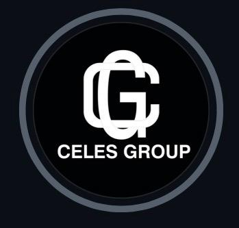
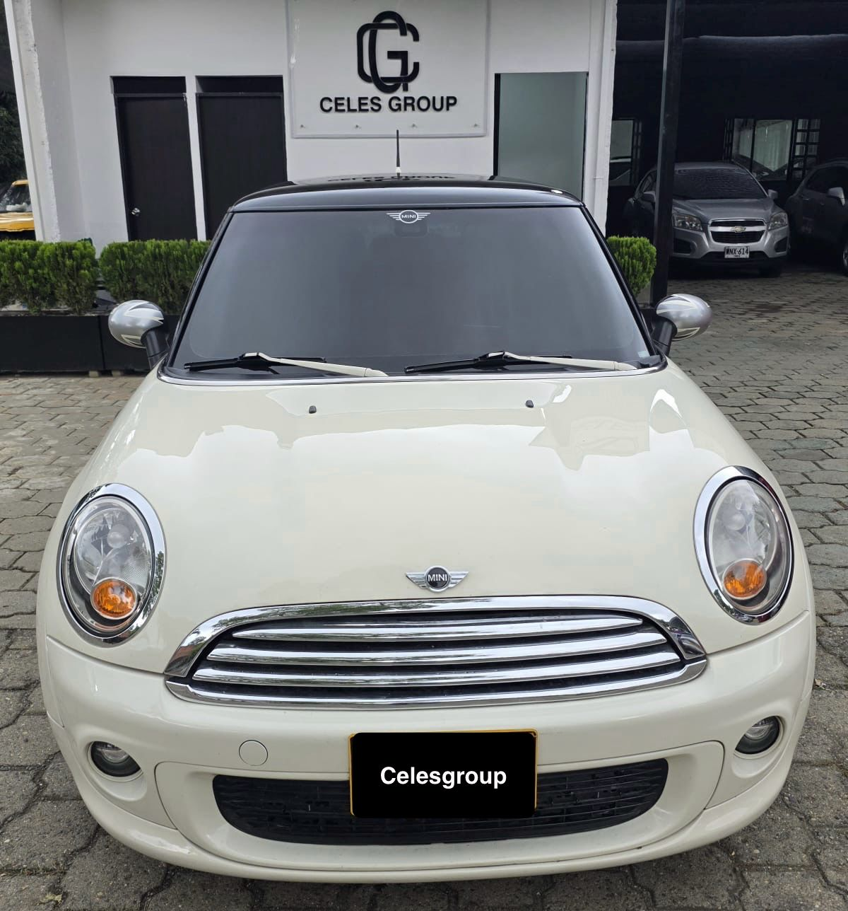

Lámina y pintura
Presentación de reparaciones de carrocería y pintura, sujetas a valoración del taller.

CELESGROUPAUTOMOTIVE EXPERIENCEExplora los vehículos de nuestro portafolio. Conoce cada detalle y conversa con el equipo antes de decidir.
Explorar vehículos
Explora cada vehículo y desliza sus fotografías.
Haz clic en cualquier ficha para conocerlo mejor.
Portafolio construido con fotografías reales. Los datos aún no confirmados se identifican expresamente dentro de cada ficha.
Una propuesta para presentar el cuidado y la reparación del vehículo con claridad: qué necesita, qué se hará y cómo se entregará.
Servicios propuestos · Alcances por confirmarUna muestra en video del proceso de porcelanizado recibido por CELESGROUP. Este espacio crecerá con evidencias autorizadas de trabajos terminados.
Video real · PorcelanizadoPresentación de reparaciones de carrocería y pintura, sujetas a valoración del taller.
Un espacio para el acabado y cuidado exterior, con alcance definido para cada vehículo.
Una muestra real en video y una ficha de servicio cuyo alcance se define después de valorar el vehículo.
Un espacio para conservar entregas y trabajos reales.
Cada caso contará su propio recorrido.
La propuesta del portafolio reúne información visible, acompañamiento y evidencias. Cada afirmación comercial deberá contar con respaldo antes de publicarse.
Fotografías reales, detalles y características por confirmar con el equipo.
Precio, alcance y condiciones explicados antes de una compra o un trabajo.
Historial de entregas y trabajos con evidencias autorizadas, sin exponer documentos privados.
Conoce al equipo y sigue el avance de nuestro portafolio.